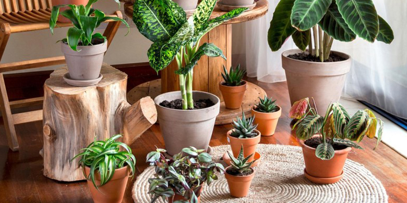

Non-Flowering Plants

Non-flowering plants, also known as cryptogams, are a diverse group of plants that reproduce via spores rather than seeds and do not produce flowers or fruits. Despite lacking the showy blooms of angiosperms, non-flowering plants play crucial roles in ecosystems worldwide, contributing to soil stabilization, nutrient cycling, and providing habitats for numerous other organisms.
Key Characteristics
- Reproduction via Spores: Unlike flowering plants, non-flowering plants reproduce through spores, which are single-celled structures capable of developing into new individuals under suitable conditions.
- Absence of Flowers and Fruits: Non-flowering plants lack the reproductive structures typically associated with angiosperms, such as flowers and fruits. Instead, they produce specialized structures for spore dispersal, such as sporangia or sori.
- Diverse Life Forms: Non-flowering plants encompass a wide range of life forms, including mosses, liverworts, ferns, horsetails, and algae. These organisms exhibit a variety of growth habits, from small, inconspicuous mosses to towering tree ferns.
Classification
Non-flowering plants are classified into several groups
- Bryophytes: This group includes mosses, liverworts, and hornworts. Bryophytes are small, non-vascular plants that typically grow in damp environments, where they play important roles in soil formation and moisture retention.
- Ferns and Fern Allies: Ferns are vascular plants that reproduce via spores. They have well-developed roots, stems, and leaves, and are found in a variety of habitats ranging from tropical rainforests to temperate woodlands.
- Algae: Algae encompass a diverse group of photosynthetic organisms that can be found in freshwater, marine, and terrestrial environments. They vary greatly in size and complexity, ranging from microscopic unicellular species to large, multicellular seaweeds.
Ecological Roles
- Soil Stabilization: Non-flowering plants, especially bryophytes, help stabilize soil and prevent erosion, particularly in areas with steep slopes or bare ground
- Nutrient Cycling: Mosses and ferns contribute to nutrient cycling by absorbing minerals from the soil and releasing them back into the environment when they decompose.
- Habitat Provision: Non-flowering plants provide habitats and food sources for a variety of organisms, including insects, birds, and small mammals.
Conservation Challenges
Non-flowering plants face threats from habitat destruction, pollution, climate change, and invasive species. Because many non-flowering plants have specialized habitat requirements, they are particularly vulnerable to changes in environmental conditions. Conservation efforts focus on habitat preservation, restoration projects, and raising awareness of the ecological importance of these often overlooked organisms.
Despite their inconspicuous appearance, non-flowering plants are integral components of terrestrial and aquatic ecosystems, contributing to biodiversity, ecosystem functioning, and human well-being. Protecting these plants is essential for maintaining healthy ecosystems and the services they provide to both nature and society.